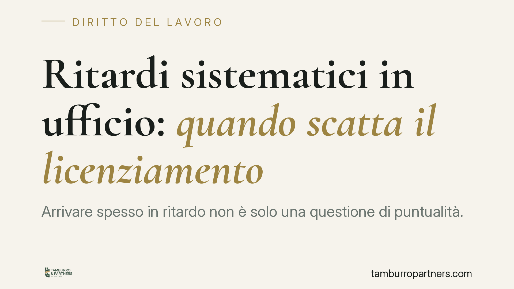

Ritardi sistematici in ufficio: quando scatta il licenziamento
Arrivare spesso in ritardo non è solo una questione di puntualità. La Cassazione ha chiarito che ritardi sistematici e ingiustificati possono integrare la giusta causa di licenziamento ai sensi dell'art. 2119 del codice civile. Ma il confine tra semplice inadempimento e rottura del rapporto fiduciario dipende da criteri precisi, che conviene conoscere sia dal lato datoriale sia da quello del lavoratore.

Il caso e perché conta
La domanda è ricorrente: un dipendente che accumula ritardi può essere licenziato? La risposta, secondo la giurisprudenza consolidata, è che dipende. Il ritardo isolato è un'inadempienza minore. La reiterazione, invece, può assumere rilievo disciplinare fino a giustificare la sanzione più grave.
Il principio è di interesse per entrambe le parti del rapporto. Il datore di lavoro deve sapere quando un provvedimento espulsivo regge in giudizio; il lavoratore deve conoscere i propri margini prima di trovarsi davanti a una contestazione.
Inquadramento normativo
Il riferimento è l'art. 2119 del codice civile, che consente il recesso senza preavviso quando si verifica "una causa che non consenta la prosecuzione, anche provvisoria, del rapporto". È la cosiddetta *giusta causa*: un inadempimento talmente grave da spezzare in modo irreversibile il vincolo di fiducia tra le parti.
La Corte di Cassazione ha affrontato più volte il tema dei ritardi ripetuti. Il ritardo, di per sé, viola l'obbligo di diligenza previsto dall'art. 2104 c.c. e l'obbligo di rispettare l'orario di lavoro. Quando i ritardi diventano sistematici e persistono nonostante richiami e sanzioni progressive, la giurisprudenza riconosce che possano integrare la giusta causa.
Due elementi restano decisivi. Il primo è la proporzionalità: il licenziamento deve essere una risposta adeguata alla gravità del comportamento, non una reazione sproporzionata a episodi occasionali. Il secondo è il rispetto della procedura disciplinare prevista dall'art. 7 dello Statuto dei lavoratori (legge n. 300/1970): contestazione scritta, tempo per le giustificazioni, coerenza tra addebito e sanzione.
Implicazioni pratiche
Per il datore di lavoro, il punto critico non è il singolo ritardo ma la costruzione di un quadro documentale. Un licenziamento fondato su ritardi isolati o mai formalmente contestati è quasi sempre destinato a essere annullato. Al contrario, una sequenza di richiami e sanzioni proporzionate, seguita da nuove violazioni, rafforza la legittimità del recesso.
Per il lavoratore, contano le giustificazioni. Un ritardo dovuto a cause serie e documentabili ha un peso diverso da uno reiterato senza spiegazione. Anche il contesto rileva: la tolleranza di fatto praticata in azienda, la presenza di orari flessibili, l'assenza di danni concreti all'organizzazione sono tutti elementi valutabili in giudizio.
È utile ricordare che la valutazione della giusta causa è sempre in concreto. Il giudice non applica una regola aritmetica sul numero di ritardi, ma considera l'insieme del comportamento, la sua incidenza sul rapporto fiduciario e la reazione datoriale nel tempo.
Cosa fare in concreto
Per il datore di lavoro:
- Documenta ogni ritardo con precisione, indicando data, durata e assenza di giustificazione.
- Attiva la procedura disciplinare corretta: contesta per iscritto, concedi il termine per le difese, applica sanzioni graduali prima del licenziamento.
- Verifica la proporzionalità tra il comportamento contestato e la sanzione scelta, evitando reazioni sproporzionate a episodi sporadici.
Per il lavoratore:
- Conserva ogni documento utile a giustificare i ritardi (certificati, comunicazioni, cause di forza maggiore).
- Rispondi sempre alle contestazioni disciplinari nei termini indicati, senza lasciare l'addebito privo di replica.
In entrambi i casi, consigliamo di far valutare la situazione prima di assumere iniziative definitive: il margine tra un provvedimento legittimo e uno annullabile è spesso sottile e dipende dai dettagli del singolo caso.
Un ultimo punto
La reiterazione dei ritardi non è un lasciapassare automatico per il licenziamento, né una violazione da sottovalutare. È un terreno in cui la forma procedurale e la gradualità delle sanzioni pesano quanto la sostanza del comportamento. Ricostruire con ordine la cronologia dei fatti è il primo passo per capire quale spazio esista, da un lato e dall'altro.
---
*Contributo informativo a cura di Tamburro & Partners - Avv. Giuseppe Tamburro. Non costituisce parere legale.*
Ogni storia di lavoro ha i suoi tempi.
Se gestisci HR e vuoi un confronto su contenzioso, ispezioni o licenziamenti, scrivi allo studio. Ti rispondiamo entro un giorno lavorativo.